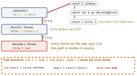

swift · folio
In one line: Swift errors are values (any type conforming to the empty
protocol Error) returned on a separate, checked path: a
function says throws, every call site says try, and the error
travels up until a do/catch handles it. No stack unwinding across
unmarked frames, no cost on the success path, no stack trace.
Download PDF Print view LaTeX source

How it works
trypropagates (caller mustthroworcatch);try?turns the error intoniland flattens (throws -> Int?givesInt?, since Swift 5);try!traps on error.catchclauses are patterns, checked top to bottom:catch E.timeout,catch E.status(let c) where c >= 500,catch let e as DecodingError,catch is CancellationError; a barecatchbindserror. In a non-throwing function the catches must be exhaustive (usually: end with barecatch).rethrows: throws only if its closure argument does —map,filterneedtryonly for a throwing closure.Result<Success, Failure: Error>= the outcome as a value: store it, pass it to a callback, collect many.Result { try f() }↔try r.get();map,mapError,flatMap.- Typed throws (Swift 6, SE-0413):
throws(ParseError).throws≡throws(any Error); non-throwing ≡throws(Never). Adowhose calls all throwEgivescatchanerror: E— exhaustiveswitch, no casting. Genericthrows(E)replacesrethrows. Advice: keep public APIs untyped (adding a case later breaks clients); typed for closed internal domains/Embedded. deferruns on every scope exit, LIFO; after areturnexpression is evaluated; it cannotthroworreturnitself.LocalizedError:errorDescription,failureReason,recoverySuggestion— feedslocalizedDescription.CustomNSError: domain/code forNSErrorbridging.
Example
enum NetErr: Error { case timeout, status(Int) }
func refresh() async { // non-throwing
isLoading = true
defer { isLoading = false } // on every exit
do {
let data = try await api.fetch() // throws NetErr
items = try JSONDecoder().decode([Item].self, from: data)
} catch NetErr.status(let c) where c >= 500 {
banner = "Server down (\(c))"
} catch is CancellationError {
return // user left: no banner
} catch { // required catch-all
log(error); banner = error.localizedDescription
}
}Never-crash rules
- No
try!/!on input you do not own (network, disk, user).try!only for invariants: a bundled fixture, a literal regex. assert= debug only (gone in-O);preconditionstays in release;fatalErroralways. All three are for programmer errors, not runtime conditions.- Wrap with context, never swallow:
catch { throw AppError.parse(underlying: error) }.
How an error travels

Across async & Task
async throwscomposes: call withtry await. Order of keywords:try await f().- Unstructured
Task{}stores the error inTask<T, any Error>; nothing forces you to read it. async let: error surfaces at theawait; siblings are cancelled when the scope exits.withThrowingTaskGroup: first thrown child error leaves the group → the rest are cancelled.- Cancellation is cooperative:
try Task.checkCancellation()andTask.sleepthrowCancellationError;URLSessionthrowsURLError(.cancelled)instead — treat both as “not a failure”.
Traps
try?onthrows -> Int?:nilmeans “threw” or “returned nil” — usedo/catch.- In
do { try a(); try b() }, ifathrows,bnever runs. - A
deferthat mutates the returned variable does not change the already-evaluated return value. - Typed throws in a public API = a breaking change for every new case.
Remember
“try marks, throw sends, catch ends; defer cleans backwards.” try? = forget, try! = bet the app, Result = keep for later.